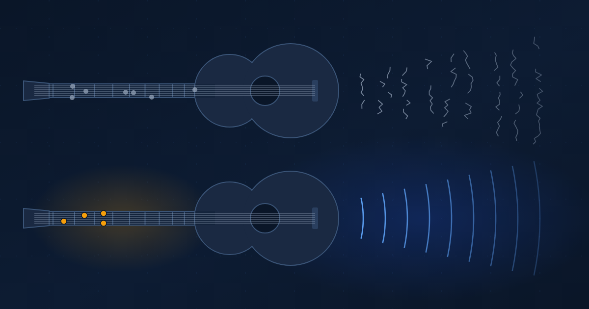

Same Guitar, Different Hands
Everyone gets the same AI instrument. The difference is a trained ear, and it takes far less practice than a guitar.
Ibrahim AbuAlhaol, PhD, P.Eng., SMIEEE
AI Technical Lead
Hand the same guitar to two people. One plays something that makes a room go quiet. The other makes noise. The guitar did not change. The hands did, and more than the hands, the ear behind them.
I keep returning to this picture after a conversation with my friend and mentor, Dr. Khaled El-Maleh [1]. We were talking about why two people with the same AI tools and the same models get such different results. Khaled put it as a guitar: in the right hands it makes art, and in other hands it only makes noise. This article follows that idea to its practical end. The starting point is his.
The same instrument, very different music
The gap is measurable. In a 2023 field experiment with 758 Boston Consulting Group consultants, people using GPT-4 on tasks inside the model's competence finished 12.2% more tasks, 25.1% faster, and their work was rated more than 40% higher in quality. On a task just outside that competence, the AI users were 19 percentage points less likely to reach the correct answer than colleagues working without it [2]. Same model, same firm. What separated the two outcomes was whether the person could tell when the model had stopped being right.
A customer support study found the other side of it. Access to an AI assistant raised issues resolved per hour by 14% on average, and by 34% for novice and low-skilled agents, with little effect on the most experienced [3]. The assistant supplied the hands to people who had not built them yet. That is good news, and it is also the trap: a tool that supplies the hands can make it feel as if the ear came with it.
Signal, noise and the ear in between
Engineers have a precise word for this. Every channel carries signal and noise, and the quality of what comes out depends on the ratio between them, the signal-to-noise ratio [4]. An AI model is a channel that produces both at high volume. The signal is output that is correct and worth keeping. The noise is the rest: the confident wrong number, the invented citation, the paragraph that sounds fine and says nothing.
The model does not label which is which. That job falls to the person reading. So the useful measure of a human working with AI is the share of what they keep that is actually signal. I call it the collaboration signal-to-noise ratio. The model fixes how much signal is available. The person's judgment decides how much of it is kept and how much noise slips through with it.
The model sets the ceiling. The ear sets the signal-to-noise ratio. Two people on the same model get different results because they filter differently, and filtering is a skill you can train.
There are two ways to have a bad ear. The obvious one is accepting noise, such as shipping a wrong figure because it was well formatted. The quieter one is rejecting signal: distrusting everything and redoing work the model got right. Both lower the ratio. Researchers at Microsoft Research and Carnegie Mellon surveyed 319 knowledge workers and found that higher confidence in the AI was associated with less critical thinking, while higher confidence in one's own ability was associated with more [5]. The ear weakens when you stop using it.
Why the practice is shorter
A guitarist needs years. Anders Ericsson's study of expert musicians found that the best violinists had accumulated around 10,000 hours of deliberate practice by age 20, meaning effortful work aimed at specific weaknesses, with feedback [6]. Most of those hours go to the hands: chord shapes and timing. The ear grows alongside them, slowly.
AI moves most of the hands off the human. Writing a clear request and giving the model the right context take days to learn, not years. The model plays the notes. What remains for the person is mostly the ear, so the path to proficiency is far shorter than an instrument's.
It is shorter only if the practice goes to the right place. Ten thousand prompts that train the hands and never the ear produce someone who asks quickly and still cannot tell which answers to trust.
Mindful practice, not more practice
Daniel Kahneman and Gary Klein argued for years about when expert intuition can be trusted, and agreed on a narrow answer. Intuition is reliable when the environment is regular enough to learn from and the person gets timely feedback on whether they were right [7]. Everyday AI use fails the second test. You ask, you get a fluent answer, you move on, and you rarely find out which answers were wrong. Without feedback, the ear does not learn.
The strategy, then, is to build the feedback in. The loop below takes minutes per round, and most of its steps happen in your head rather than in the model.
- Predict first. Before asking, write down your own answer or outline, even a rough one. You now have something to compare against, and you notice when the model says something you would not have.
- Practice on songs you already know. Use the model on problems you have already solved, where you know the right answer. Wrong notes are easy to hear in a familiar song, and this is how you learn what the model's noise sounds like in your own domain.
- Name the noise. When the model is wrong, label the kind of wrong: a fabricated source, a stale fact, a confident estimate, a correct answer to a different question. A short log turns a vague unease into specific things to listen for.
- Keep score. Track how often your review caught an error that a later check confirmed, and how often you rejected something that turned out to be right. When the score is steady, move to problems you know less well.
None of this asks for more hours with the tool. It asks that the hours you already spend produce feedback. In my own work, a few weeks of this loop changed what I notice in a model's answer before I could fully explain why. That is what a trained ear feels like from the inside.
What changes for teams
Most AI rollouts measure adoption: seats, prompts sent, hours saved. Those numbers count how often the guitar is played and say nothing about the music. Two teams with identical usage can have opposite outcomes, one shipping more signal and the other shipping more noise, faster.
The better question for a leader is what share of AI-assisted work survives independent review, and whether that share is rising. It is harder to measure, and it is the number that tracks the ear. Training budgets follow the same logic. A course on prompt syntax trains the hands, which the model already supplies. Structured review against known answers trains the ear, which nothing supplies.
A better guitar still needs an ear
Models will keep improving, and the share of signal in their raw output will rise. That does not retire the ear. A better guitar in untrained hands still makes noise, only louder and more convincing. As the noise gets more polished, the ear has to get sharper to hear it.
Khaled's guitar is a useful picture because it puts the difference where it belongs, in the person. The part a guitar never offered is the timeline. Getting good at this takes weeks of mindful practice rather than years of scales, as long as the weeks go to the ear.
What leaders should do
- Measure the collaboration signal-to-noise ratio instead of adoption. Each month, sample AI-assisted work, check it independently, and track the share that holds up and the share of errors your reviewers caught first.
- Build a known-answer practice set for each team: 20 to 30 solved problems from your own domain with verified answers. Use it to train new users and to recheck experienced ones whenever the model changes.
- Require a prediction before high-stakes prompts. For decisions that matter, the person writes their own estimate or outline first, so review becomes a comparison instead of a read-through.
- Keep a shared noise log. Collect the specific ways models have been wrong in your domain, and walk new staff through it during onboarding and again after every model upgrade.
Related Articles
References & Extended Literature
- El-Maleh, K. Personal conversation with the author on why people differ so widely in how they use AI, and the guitar metaphor for it, 2026. LinkedIn profile: https://www.linkedin.com/in/dr-khaled-el-maleh-47142a2/
- Dell'Acqua, F., McFowland, E., Mollick, E., et al. (2023). "Navigating the Jagged Technological Frontier: Field Experimental Evidence of the Effects of AI on Knowledge Worker Productivity and Quality." Harvard Business School Working Paper 24-013. https://papers.ssrn.com/sol3/papers.cfm?abstract_id=4573321
- Brynjolfsson, E., Li, D., & Raymond, L. R. (2023). "Generative AI at Work." NBER Working Paper 31161. https://www.nber.org/papers/w31161
- Shannon, C. E. (1948). "A Mathematical Theory of Communication." Bell System Technical Journal, 27(3), 379-423. https://doi.org/10.1002/j.1538-7305.1948.tb01338.x
- Lee, H.-P., Sarkar, A., Tankelevitch, L., et al. (2025). "The Impact of Generative AI on Critical Thinking: Self-Reported Reductions in Cognitive Effort and Confidence Effects From a Survey of Knowledge Workers." Proceedings of CHI 2025, ACM. https://doi.org/10.1145/3706598.3713778
- Ericsson, K. A., Krampe, R. T., & Tesch-Römer, C. (1993). "The Role of Deliberate Practice in the Acquisition of Expert Performance." Psychological Review, 100(3), 363-406. https://doi.org/10.1037/0033-295X.100.3.363
- Kahneman, D., & Klein, G. (2009). "Conditions for Intuitive Expertise: A Failure to Disagree." American Psychologist, 64(6), 515-526. https://doi.org/10.1037/a0016755